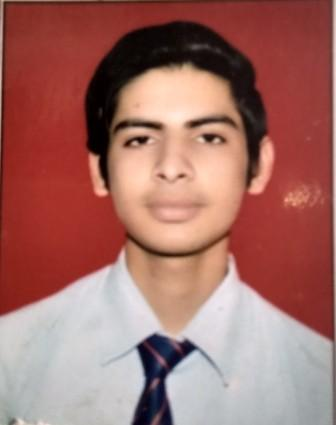
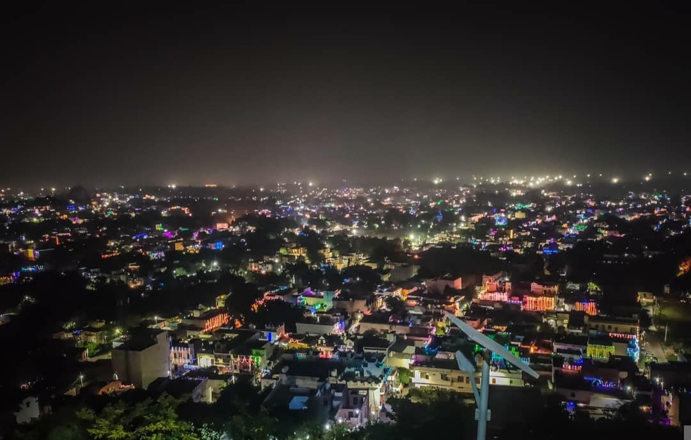
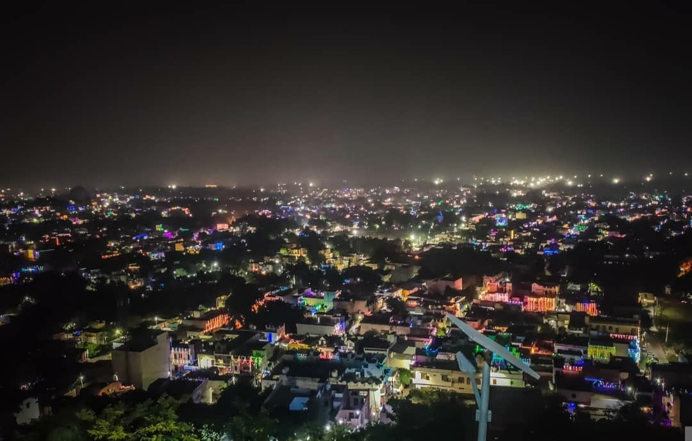

Name: Yash Shrivastava
Class: MCA 1 Year Sesction-B
ASSIGNMENT-2
About Myself

Myself Yash Srivastava and I am from Jhansi .
I completed my intermediate from Hafiz Siddiq National Inter College,Jhansi and graduation from BUNDELKHAND UNIVERSITY, JHANSI and currently i'm pursuing MCA from KIET GROUP OF INSTITUTIONS .
I Like Coding,Sports , Music ,Travel , and also teaching.
Quick Learning is one of my strenght and i'm also good in time management
...............
About My City

 

Introduction
Jhansi (Hindi pronunciation: [d͡ʒʱɑ̃ː.siː]; pronunciation (help·info)) is a historic city in the Indian state of Uttar Pradesh. It lies in the region of Bundelkhand on the banks of the Pahuj River, in the extreme south of Uttar Pradesh. Jhansi is the administrative headquarters of Jhansi district and Jhansi division. Also called the Gateway to Bundelkhand, Jhansi is situated near and around the rivers Pahuj and Betwa at an average elevation of 285 m (935 ft). It is about 420 kilometres (261 mi) from national capital New Delhi and 315 kilometres (196 mi) from state capital Lucknow.
Jhansi is well connected to all other major towns in Uttar Pradesh by road and railway networks.
The National Highways Development Project has supported development of the city.
Jhansi is also being developed as the defense corridor by the NDA government which will boost the economy of the city and the region at the same time.
Srinagar to Kanyakumari north–south corridor passes closely to Jhansi, as does the east–west corridor;
consequently there has been a sudden rush of infrastructure and real estate development in the city.
Jhansi was adjudged the third cleanest city of Uttar Pradesh and the fastest moving city in the North Zone in Swachh Survekshan 2018 rankings.
The development of a greenfield airport has been planned in the city.
On 28 August 2011 Jhansi was selected among 98 cities for smart city initiative by Government of India.
History:
During ancient times, Jhansi was a stronghold of the Chandela Rajput kings and was known as Balwant Nagar. However, it lost importance in the 11th century after the decline of the Chandela dynasty. It rose in prominence in the 17th century when a Rajput Raja Bir Singh Deo of Orchha State constructed the Jhansi Fort in 1613.[11]
Jhansi came under the Maratha Empire in 1729 when Maharaja Chattrasal offered Jhansi and some other parts of his state to the Maratha Peshwa Baji Rao I as a mark of gratitude for having helped him in defeating the Nawaf of Farrukhabad Muhammad Khan Bangash who had attacked Maharaja Chattrasal's kingdom.[11]
Geography and climate:
Jhansi is located at 25.4333 N 78.5833 E. It has an average elevation of 284 metres (935 feet).[12] Jhansi lies on the plateau of central India, an area dominated by rocky relief and minerals underneath the soil. The city has a natural slope in the north as it is on the south western border of the vast Tarai plains of Uttar Pradesh and the elevation rises on the south. The land is suitable for species of citrus fruit and crops include wheat, pulses, peas, and oilseeds. The region relies heavily on Monsoon the rains for irrigation purposes. Under an ambitious canal project (the Rajghat canal), the government is constructing a network of canals for irrigation in Jhansi and Lalitpur and some part of Madhya Pradesh. The trade in agricultural products (including grain and oilseeds) is of great economic importance.[13] The city is also a centre of brassware manufacture.[14]
A view of Jhansi from the hill of Sipri)
Climate
See also: Climate of Madhya Pradesh
Being on a rocky plateau, Jhansi experiences extreme temperatures. Winter begins in October with the retreat of the southwest monsoon (Jhansi does not experience any rainfall from the Northeast Monsoon) and peaks in mid-December. Temperatures are about 4 °C or 39.2 °F minimum and 21 °C or 69.8 °F maximum. Spring arrives by the end of February and is a short-lived phase of transition. Summer begins by April and summer temperatures can peak at 47 °C or 116.6 °F in May. The rainy season starts by the third week of June (although this is variable year to year), while the monsoon rains gradually weaken in September and end before the last week of September. In the rainy season, the average daily high temperature hovers around 36 °C or 96.8 °F with high humidity. The average rainfall for the city is about 1,150 millimetres or 45 inches per year, occurring almost entirely within the three-and-a-half months of the Southwest Monsoon. In summer Jhansi experiences temperatures as high as 45 to 49 °C (113.0 to 120.2 °F) degrees while in winter the temperatures can fall as low as 0 to 1 °C (32.0 to 33.8 °F) as recorded in winter 2011.
In the 18th century, the town of Jhansi served as the capital of a Maratha province and later the Princely State of Jhansi from 1804 till 1858, when the territory became a part of British..............
My Motive
The purpose of choosing kiet group of institutions is to improve my life be
cause kiet give me a opportunities to improve my coding skill , my c
ommunication skill and my management skill, etc.
Everyone here wants to become an engineer or a doctor or a pilot but I want to do something so that everyone gets inspired by me. I like to help others and I want to become so capable that I can help more and more people.
Top